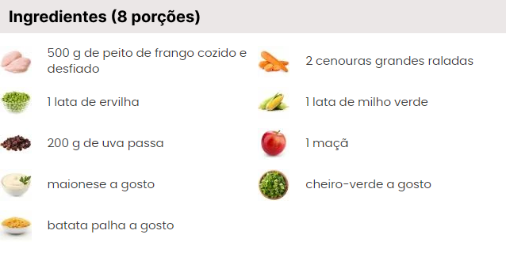

Numa tigela pequena, coloque as uvas-passas, regue com ¼ de xícara (chá)
do caldo do frango reservado e deixe hidratar enquanto prepara o restante
dos ingredientes.
Preencha uma tigela com 2 xícaras (chá) de água, junte o caldo de limão
e cubos de gelo. Lave e seque a maçã. Mantenha a casca e corte a fruta
em fatias de 0,5 cm, descarte as sementes, corte as fatias em tiras e as
tiras em cubos de 0,5 cm. Transfira os cubos de maçã para a tigela com água
e gelo e reserve até a hora de servir , isso evita que a fruta escureça.
Lave e seque as cenouras e os talos de salsão. Descasque as cenouras
e, com um fatiador de legumes específico, corte a cenoura do centro para
as pontas em tirinhas (se preferir, passe as cenouras pela parte grossa do
ralador). Com o descascador de legumes, retire as fibras superficiais do
salsão. Passe os talos pelo fatiador de legumes (mandolim) para cortar
em fatias bem finas (se preferir, fatie fino com a faca).
Numa tigela grande misture bem a maionese com o iogurte. Junte as
uvas-passas (com o caldo), acrescente o frango desfiado, a cenoura
e o salsão fatiados. Tempere com sal e pimenta a gosto e misture bem.
Você já pode servir o salpicão em seguida mas, de preferência, mantenha
na geladeira por pelo menos 20 minutos para curtir , quanto mais tempo
no molho, mais gostoso o salpicão fica.
Escorra a água das maçãs por uma peneira e acrescente ⅔ dos cubos ao
salpicão,
misture delicadamente, Reserve o restante numa tigela e tempere
com um fio de
azeite. Sirva o salpicão com as maçãs em cubos e as nozes
tostadas.